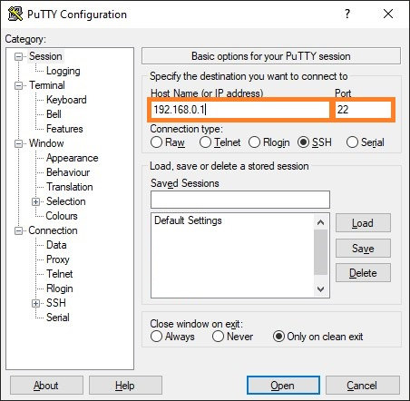
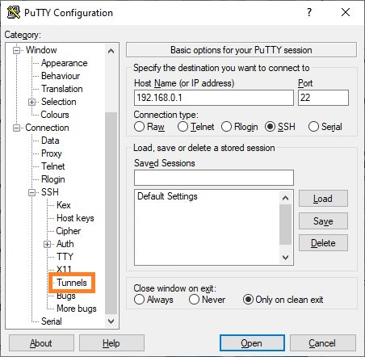
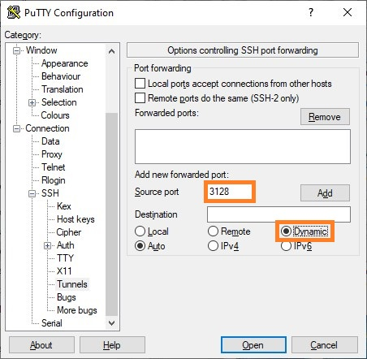
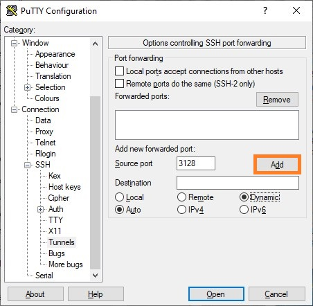
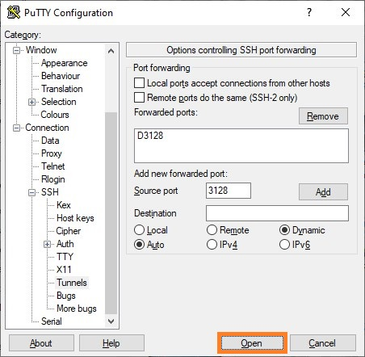

Среди различных возможностей использования SSH, есть возможность создания локального SOCKS5 прокси-сервера, трафик которого будет туннелироваться через удаленный сервер. В нашем материале мы разберем возможности использования двух популярных SSH клиентов - стандартной утилите ssh и популярного Windows клиента PuTTy.
В стандартной утилите ssh, которая является частью набора программ OpenSSH и входит в стандартный набор программ Linux и Windows, создание туннелируемого прокси сервера SOCKS5 делается с помощью указания дополнительного параметра -D.
Например, если нужно подключиться к серверу с адресом 192.168.0.1, используя имя пользователя root, с поднятием SOCKS5 прокси на 3128 порту, то строка подключения будет иметь следующий вид:
ssh -D 0.0.0.0:3128 root@192.168.0.1
После успешной авторизации, будет установлено соединение по SSH с удаленным сервером, а так же запущен локальный прокси сервер SOCKS5, трафик которого будет идти через удаленный сервер.





При закрытии окна с подключением к SSH серверу, будет так же завершена работа и прокси-сервера.